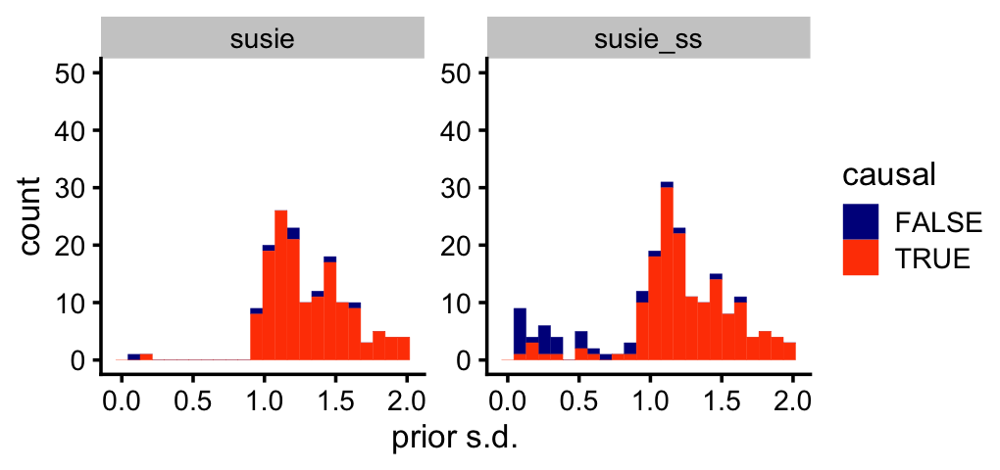

A few small simulations to assess benefits of NIG prior in various settings
Peter Carbonetto
Last updated: 2025-12-02
Checks: 7 0
Knit directory:
susie_small_sample/analysis/
This reproducible R Markdown analysis was created with workflowr (version 1.7.1). The Checks tab describes the reproducibility checks that were applied when the results were created. The Past versions tab lists the development history.
Great! Since the R Markdown file has been committed to the Git repository, you know the exact version of the code that produced these results.
Great job! The global environment was empty. Objects defined in the global environment can affect the analysis in your R Markdown file in unknown ways. For reproduciblity it’s best to always run the code in an empty environment.
The command set.seed(1) was run prior to running the
code in the R Markdown file. Setting a seed ensures that any results
that rely on randomness, e.g. subsampling or permutations, are
reproducible.
Great job! Recording the operating system, R version, and package versions is critical for reproducibility.
Nice! There were no cached chunks for this analysis, so you can be confident that you successfully produced the results during this run.
Great job! Using relative paths to the files within your workflowr project makes it easier to run your code on other machines.
Great! You are using Git for version control. Tracking code development and connecting the code version to the results is critical for reproducibility.
The results in this page were generated with repository version 3c0c03a. See the Past versions tab to see a history of the changes made to the R Markdown and HTML files.
Note that you need to be careful to ensure that all relevant files for
the analysis have been committed to Git prior to generating the results
(you can use wflow_publish or
wflow_git_commit). workflowr only checks the R Markdown
file, but you know if there are other scripts or data files that it
depends on. Below is the status of the Git repository when the results
were generated:
Ignored files:
Ignored: .DS_Store
Ignored: scripts/.DS_Store
Untracked files:
Untracked: data/Thyroid.FMO2.1Mb.RDS
Note that any generated files, e.g. HTML, png, CSS, etc., are not included in this status report because it is ok for generated content to have uncommitted changes.
These are the previous versions of the repository in which changes were
made to the R Markdown (analysis/small_sim.Rmd) and HTML
(docs/small_sim.html) files. If you’ve configured a remote
Git repository (see ?wflow_git_remote), click on the
hyperlinks in the table below to view the files as they were in that
past version.
| File | Version | Author | Date | Message |
|---|---|---|---|---|
| Rmd | 3c0c03a | Peter Carbonetto | 2025-12-02 | wflow_publish("small_sim.Rmd", verbose = T, view = F) |
ADD TEXT HERE
Load the packages needed to perform the analyses below.
library(ggplot2)
library(cowplot)Set the seed for reproducibility:
set.seed(1)ADD TEXT HERE.
load("../output/small_sim_out_n=500_v0.14.47.RData")This is a function I will use to empirically assess power and coverage from the simulations.
compute_power_and_coverage <- function (res, causal) {
N <- length(res)
power <- 0
coverage <- 0
V_true <- NULL
V_false <- NULL
for (i in 1:N) {
V <- res[[i]]$V
cs <- res[[i]]$sets$cs
L <- length(V)
all_cs <- paste0("L",seq(1,L))
names(V) <- all_cs
if (length(cs) == 0) {
x <- NULL
y <- NULL
} else {
x <- intersect(unique(unlist(cs)),causal[[i]])
y <- names(which(sapply(cs,
function (x) length(intersect(causal_snps[[i]],x)) > 0)))
}
V_true <- c(V_true,V[y])
V_false <- c(V_false,V[setdiff(all_cs,y)])
power <- power + length(x)
coverage <- coverage + length(y)
}
num_true <- sum(sapply(causal,length))
num_pos <- sum(sapply(res,function (x) length(x$sets$cs)))
return(list(power = power/num_true,
coverage = coverage/num_pos,
V_true = V_true,
V_false = V_false))
}And this a function I will use to compute the sizes of the credible sets:
get_cs_sizes <- function (res)
unlist(lapply(res,function (x) sapply(x$sets$cs,length)))Compare power and coverage:
stats_susie <- compute_power_and_coverage(res_susie,causal_snps)
stats_susie_ss <- compute_power_and_coverage(res_susie_small,causal_snps)
data.frame(method = c("susie","susie_ss"),
power = c(stats_susie$power,stats_susie_ss$power),
coverage = c(stats_susie$coverage,stats_susie_ss$coverage))
# method power coverage
# 1 susie 0.9476440 0.9629630
# 2 susie_ss 0.9842932 0.9509804These are the running times:
summary(runtimes)
# susie susie_small
# Min. : 0.680 Min. : 2.825
# 1st Qu.: 0.870 1st Qu.: 5.753
# Median : 1.192 Median : 8.394
# Mean : 1.586 Mean : 15.734
# 3rd Qu.: 1.488 3rd Qu.: 15.605
# Max. :29.214 Max. :128.097Compare the prior variances of the true positives vs. the false positives:
pdat <- rbind(data.frame(method = "susie",causal = TRUE,
V = stats_susie$V_true),
data.frame(method = "susie",causal = FALSE,
V = stats_susie$V_false),
data.frame(method = "susie_ss",causal = TRUE,
V = stats_susie_ss$V_true),
data.frame(method = "susie_ss",causal = FALSE,
V = stats_susie_ss$V_false))
pdat <- transform(pdat,sigma = sqrt(V))
pdat <- subset(pdat,sigma < 2)
ggplot(pdat,aes(x = sigma,color = causal,fill = causal)) +
facet_grid(cols = vars(method),scales = "free_y",axes = "all") +
geom_histogram(bins = 24,position = "stack",linewidth = 0.05) +
scale_color_manual(values = c("darkblue","orangered")) +
scale_fill_manual(values = c("darkblue","orangered")) +
ylim(0,50) +
labs(x = "prior s.d.") +
theme_cowplot(font_size = 10)
# Warning: Removed 2 rows containing missing values or values outside the scale range
# (`geom_bar()`).
Now compare in the setting with much fewer samples:
load("../output/small_sim_out_n=40_v0.14.47.RData")Compare power and coverage:
stats_susie <- compute_power_and_coverage(res_susie,causal_snps)
stats_susie_ss <- compute_power_and_coverage(res_susie_small,causal_snps)
data.frame(method = c("susie","susie_ss"),
power = c(stats_susie$power,stats_susie_ss$power),
coverage = c(stats_susie$coverage,stats_susie_ss$coverage))
# method power coverage
# 1 susie 0.4065041 0.9255814
# 2 susie_ss 0.8536585 0.9284165These are the running times:
summary(runtimes)
# susie susie_small
# Min. :0.1430 Min. :0.2650
# 1st Qu.:0.2500 1st Qu.:0.5390
# Median :0.2925 Median :0.6740
# Mean :0.3009 Mean :0.8206
# 3rd Qu.:0.3427 3rd Qu.:0.8832
# Max. :0.5590 Max. :5.7960Compare the prior variances of the true positives vs. the false positives:
pdat <- rbind(data.frame(method = "susie",causal = TRUE,
V = stats_susie$V_true),
data.frame(method = "susie",causal = FALSE,
V = stats_susie$V_false),
data.frame(method = "susie_ss",causal = TRUE,
V = stats_susie_ss$V_true),
data.frame(method = "susie_ss",causal = FALSE,
V = stats_susie_ss$V_false))
pdat <- transform(pdat,sigma = sqrt(V))
pdat <- subset(pdat,sigma < 2)
ggplot(pdat,aes(x = sigma,color = causal,fill = causal)) +
facet_grid(cols = vars(method),scales = "free_y",axes = "all") +
geom_histogram(bins = 24,position = "stack",linewidth = 0.05) +
scale_color_manual(values = c("darkblue","orangered")) +
scale_fill_manual(values = c("darkblue","orangered")) +
ylim(0,60) +
labs(x = "prior s.d.") +
theme_cowplot(font_size = 10)
# Warning: Removed 2 rows containing missing values or values outside the scale range
# (`geom_bar()`).
sessionInfo()
# R version 4.3.3 (2024-02-29)
# Platform: aarch64-apple-darwin20 (64-bit)
# Running under: macOS 15.7.1
#
# Matrix products: default
# BLAS: /Library/Frameworks/R.framework/Versions/4.3-arm64/Resources/lib/libRblas.0.dylib
# LAPACK: /Library/Frameworks/R.framework/Versions/4.3-arm64/Resources/lib/libRlapack.dylib; LAPACK version 3.11.0
#
# locale:
# [1] en_US.UTF-8/en_US.UTF-8/en_US.UTF-8/C/en_US.UTF-8/en_US.UTF-8
#
# time zone: America/Chicago
# tzcode source: internal
#
# attached base packages:
# [1] stats graphics grDevices utils datasets methods base
#
# other attached packages:
# [1] cowplot_1.1.3 ggplot2_3.5.2
#
# loaded via a namespace (and not attached):
# [1] gtable_0.3.6 jsonlite_2.0.0 dplyr_1.1.4 compiler_4.3.3
# [5] promises_1.3.3 tidyselect_1.2.1 Rcpp_1.1.0 stringr_1.5.1
# [9] git2r_0.33.0 dichromat_2.0-0.1 later_1.4.2 jquerylib_0.1.4
# [13] scales_1.4.0 yaml_2.3.10 fastmap_1.2.0 R6_2.6.1
# [17] labeling_0.4.3 generics_0.1.4 workflowr_1.7.1 knitr_1.50
# [21] tibble_3.3.0 rprojroot_2.0.4 bslib_0.9.0 pillar_1.11.0
# [25] RColorBrewer_1.1-3 rlang_1.1.6 cachem_1.1.0 stringi_1.8.7
# [29] httpuv_1.6.14 xfun_0.52 fs_1.6.6 sass_0.4.10
# [33] cli_3.6.5 withr_3.0.2 magrittr_2.0.3 digest_0.6.37
# [37] grid_4.3.3 lifecycle_1.0.4 vctrs_0.6.5 evaluate_1.0.4
# [41] glue_1.8.0 farver_2.1.2 whisker_0.4.1 rmarkdown_2.29
# [45] tools_4.3.3 pkgconfig_2.0.3 htmltools_0.5.8.1